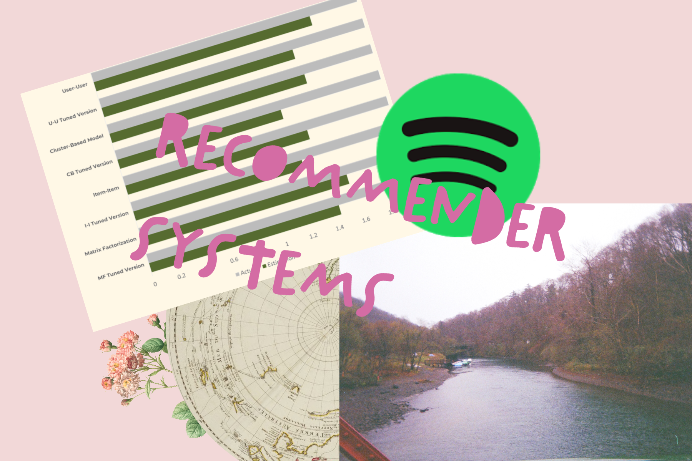

Spotify Recommender
EDA · Item/User-based · SVD · Content-basedBuilt hybrid recsys and explained trade-offs (precision/novelty/coverage) with clear metrics and slices.
Logline → Problem → Approach → Impact → Tools
- Logline: Turn listening history into relevant, explorable recs.
- Problem: Baseline popularity skews; cold-start on niche tracks; explainability.
- Approach: EDA → CF (user/item-based), SVD, content-based fallback; metric deck (RMSE, MAP@K, coverage/novelty); error analysis by cohort.
- Impact: Improved top-K precision vs. baseline; balanced novelty with familiarity; produced exec-ready story to guide product trade-offs.
- Tools: Python (pandas, scikit-learn, Surprise), SQL, matplotlib.